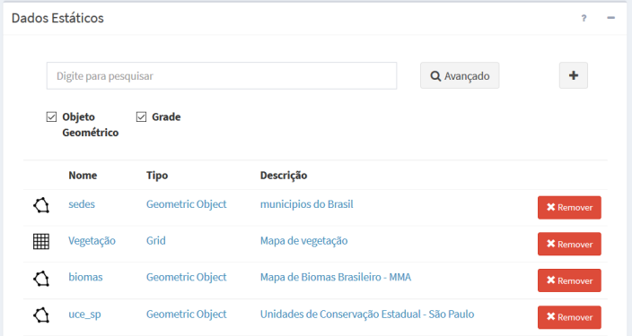
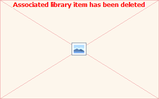

Dados Estáticos

Um dado estático deve estar associado a um servidor de dados. Este servidor pode fornecer um ou mais conjuntos de dados estáticos. Os dados estáticos podem ser Vetoriais (geometrias de pontos, linhas ou polígonos com atributos associados) e Matriciais (grades retangulares). Dessa maneira, as principais características de um dado estático são:
- Um dado estático é identificado por um nome único;
- Um usuário pode definir vários dados estáticos em um projeto;
- Dados estáticos são utilizados por um ou mais modelos de análise;
- Um dado estático será identificado por um ícone. Para Vetoriais (
 ) e para Matriciais (
) e para Matriciais (  ).
). - O dado estático vetorial para uso em um projeto deve estar disponível na forma de arquivos tradicionais como shapefile (ou outros formatos da OGR - http://www.gdal.org/ogr_formats.html ) ou na forma de tabelas em um banco de dados PostgreSQL + PostGIS.
- O dado estático matricial para uso em um projeto deve estar disponível na forma de arquivos tradicionais como GeoTiff (ou outros formatos da GDAL - http://www.gdal.org/formats_list.html ).

A Figura 2.19 mostra a área de trabalho do menu “Dados Estáticos” com a lista de alguns dados disponíveis. Nesta área é possível selecionar um dado estático para fazer alguma edição, criar um novo dado ou ainda remover um dado existente. Veja a seguir detalhes de cada tipo de dado estático e as opções de manipulação correspondentes.

Figura 2.19 – Módulo de Administração: Lista de dados estáticos disponíveis na área de trabalho.
DADOS ESTÁTICOS VETORIAIS
Os dados estáticos do tipo vetorial podem ser oriundos de diversas fontes como apresentado no Capítulo 1. Para facilitar o seu uso foi incluído a leitura desses dados nos seguintes formatos:
- Arquivos shapefile: devem estar associados a um servidor de dados do tipo “Arquivo”. Lembre-se que um mapa vetorial neste formato é constituído de um conjunto de arquivos com mesmo prefixo, isto é, devem estar disponíveis no mínimo os arquivos <mapa>.shp, <mapa>.dbf, <mapa>.shx e <mapa>.prj.
- Tabelas do banco de dados PostgreSQL + PostGIS: utilize o aplicativo SIG de sua preferência para carregar ou criar os mapas vetoriais que serão utilizados pelo projeto do usuário. No aplicativo TerraView versão 5.2.x (www.dpi.inpe.br/terralib5 ) ou superior utilize a opção “Intercâmbio de Camadas”.
IMPORTANTE: Dados estáticos na forma de arquivos como shapefile somente poderão ser utilizados como camadas a serem publicadas no “Módulo de Monitoramento” para visualização dos mesmos. Já os dados estáticos na forma de tabelas no PostGIS poderão ser publicados no “Módulo de Monitoramento” e também serem utilizados nas análises como objetos monitorados.
Arquivos shapefile que não estão disponíveis no servidor de dados, seja do tipo “Arquivo” ou banco de dados “PostGIS”, definidos no projeto do usuário, poderão ser carregados ou transferidos a partir de qualquer computador conectado a internet que tenha acesso ao “Módulo de Administração”. Veja opção de transferir (fazer “upload”) arquivos em “ADICIONANDO DADO ESTÁTICO”.
DADOS ESTÁTICOS MATRICIAIS
Os dados estáticos do tipo matriciais podem ser oriundos de diversas fontes como apresentado no item Dados e Formatos. Para facilitar o seu uso foi incluído a leitura desses dados nos seguintes formatos:
- Arquivos GeoTiff: mapas matriciais estáticos que serão publicados na aplicativo web “Módulo de Monitoramento” ou como camadas em análises para cruzar com objetos monitorados ou com outros dados matriciais, devem estar associados a um servidor de dados do tipo “Arquivo”.
ADICIONANDO DADO ESTÁTICO:
Para adicionar um novo dado estático é necessário ter um projeto ativo. No menu de opções selecione “Dados Estáticos” para que a lista de dados disponíveis seja apresentada na área de trabalho. Clique no botão “ + ” para adicionar novo dado. Utilize o botão “Salvar” para salvar o dado estático. Não é permitido nomes de dados em duplicidade. Botão “Cancelar” volta à tela anterior sem salvar o dado. Detalhes da adição de um novo dado estático veja aqui.
Para consultar e alterar as configurações de um dado estático clique em “Dados Estáticos” no menu de opções e na área de trabalho clique sobre o nome ou tipo de um item disponível. Após editar os campos desejados utilize o botão “Salvar” para salvar as alterações. Botão “Cancelar” volta à tela anterior sem salvar alterações.
- FILTRANDO ITENS NA LISTA DE DADOS ESTÁTICOS:
Para filtrar itens na lista de dados estáticos clique em “Dados Estáticos” no menu de opções. Na área de trabalho no campo texto “Digite para pesquisar” digite o texto desejado. Note que todas as colunas disponíveis são utilizadas no filtro. Utilize o botão “Avançado” para apresentar os botões referentes aos tipos de dados estáticos e escolher os que deverão fazer parte da lista. Por padrão todos os tipos estarão selecionados. O filtro digitado e o(os) botões de escolha do tipo de dados estáticos são combinados para apresentar os itens da lista.
- REMOVENDO UM UM DADO ESTÁTICO:
Para remover um dado estático de um projeto ativo clique no menu “Dados Estáticos” para apresentar a lista de dados na área de trabalho. Na frente do nome do dado clique em “Remover”. Confirme a remoção na mensagem com “OK”.
Importante: Um dado estático somente poderá ser removido se não houver nenhuma análise ou visualização associada.
Created with the Personal Edition of HelpNDoc: Free PDF documentation generator